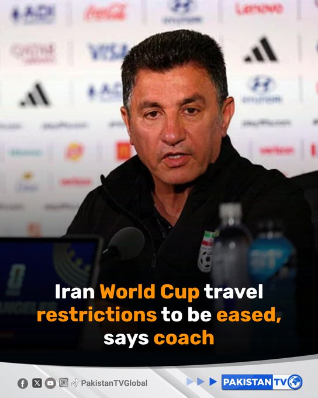
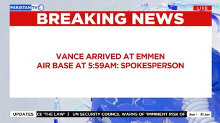
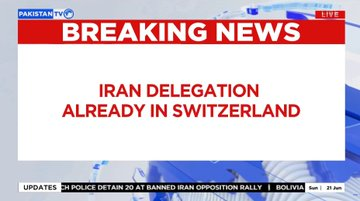
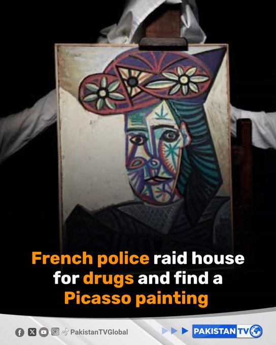
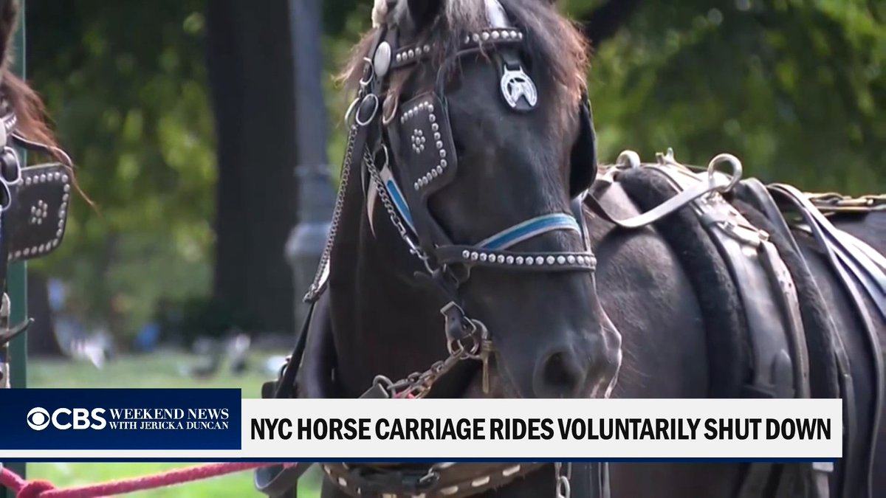
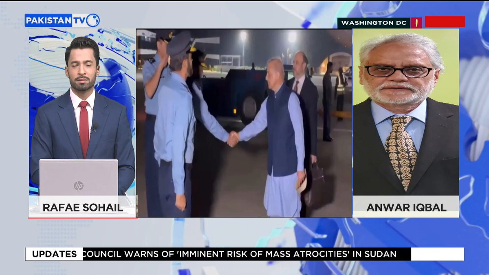
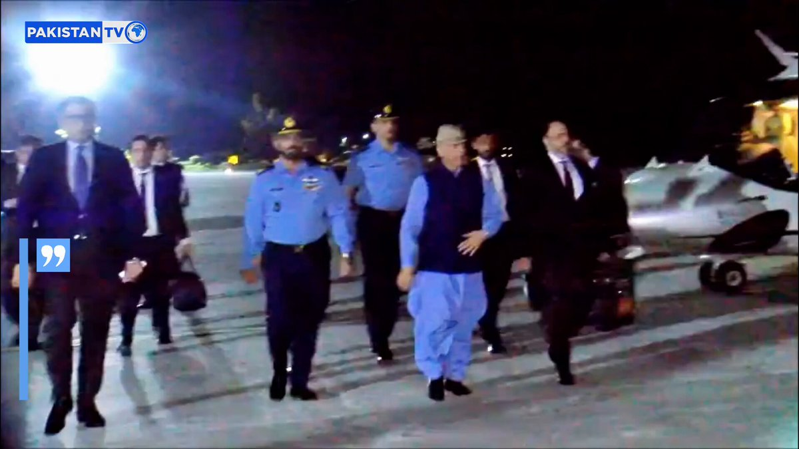

@CBSNews
📝 原文: Claude Guillemot, co-founder of video game maker Ubisoft, dies in plane crash
🇨🇳 译文: 视频游戏制造商育碧联合创始人克劳德·吉列莫特 (Claude Guillemot) 因飞机失事身亡

🕒 2026-06-21T06:00:00+00:00
| 来源 | 旧窗口内数量 | 本次新增 | 本次淘汰 | 当前窗口内共有 |
|---|---|---|---|---|
| 推文 + Dawn 新闻 | 0 | 31 | 0 | 31 |
| ARY News | 0 | 0 | 0 | 0 |
注：淘汰数 = 旧窗口内数量 + 本次新增 - 当前窗口内共有















暂无文章。